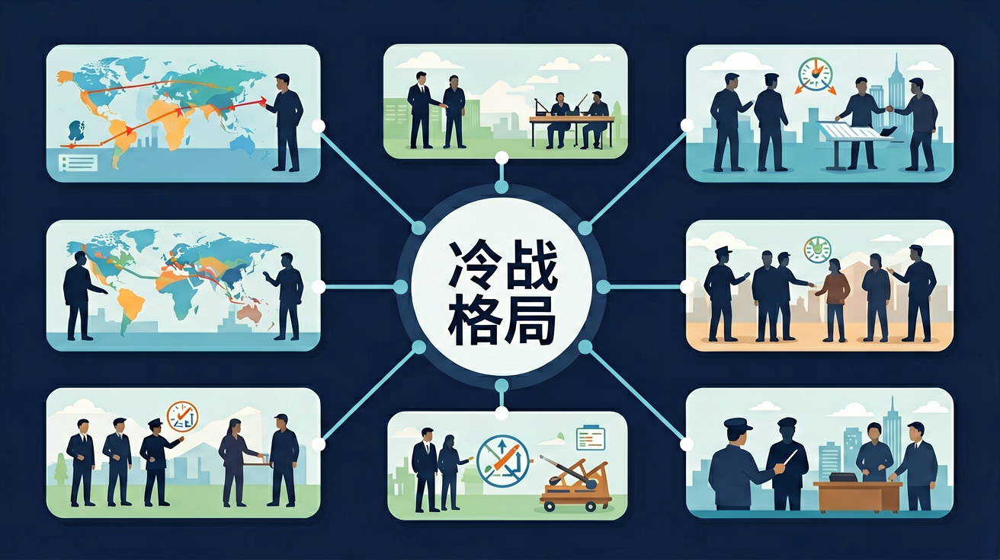

❓ 为什么美苏争霸要叫'冷战'而不是直接打起来？
❓ 北约和华约到底在争什么？和我们有关系吗？
❓ 课本说'两极格局'，为什么现在美国一家独大？
学完这一课，这些问题你都能自信地回答。
🎯 能说出冷战的定义及标志性事件
🎯 能判断美苏阵营的代表性国家
🎯 能分析古巴导弹危机中的博弈策略
冷战开始的标志性事件是？
下列不属于华约成员国的是？
冷战格局是初中历史的重要内容。世界现代史部分应包含冷战与两极格局的内容，使学生了解二战后国际关系的基本格局。
通过了解冷战的形成与两极格局的演变，认识其对世界局势的深远影响。
二战后美苏由盟友转为对手，在政治、经济、军事、意识形态上全面对抗，形成两极格局。德国分裂、北约与华约对峙、朝鲜战争与越南战争等是冷战的重要表现。
点击时代按钮切换世界格局；结合本课主题观察空间分布。
错误一：认为冷战是美苏直接军事冲突。学生常将1950年朝鲜战争中美军参战等同于美苏开战，这是混淆了代理人战争与直接对抗的概念。根源在于对冷战"避免热战"的核心特征理解不足。实际上，美苏在朝鲜战场始终未正式宣战，苏联仅以志愿军名义秘密参战，双方都刻意控制冲突规模。
错误二：将马歇尔计划与莫洛托夫计划简单等同。学生容易忽略两者本质差异：1947年马歇尔计划投入130亿美元（占美国GDP5%），通过经济援助促进西欧复兴；而1949年莫洛托夫计划仅向东欧提供有限工业设备，实际是经互会体系下的资源调配。这种错误源于对资本主义市场体系和苏联指令经济的不同运作机制缺乏认识。
错误三：误判古巴导弹危机结果。许多学生认为1962年危机以苏联全面撤导弹告终，却忽略美国同时秘密撤走土耳其导弹的关键事实。这种片面认知源自仅关注赫鲁晓夫公开信而忽视肯尼迪私下承诺的外交细节，需要结合《赫鲁晓夫回忆录》等一手史料进行纠正。
复制提示词到 AI 学伴，生成「冷战格局」的时间轴或事件提纲；也可以上传你手绘的示意图，请 AI 学伴点评。
复制后可粘贴到 AI 学伴继续对话。
起源写实力与制度差异；表现分欧洲与亚洲；影响写军备竞赛与发展中国家夹缝处境。
常见误区：常见误区是以为冷战只发生在欧洲，忽视亚洲等局部热战。
两极格局中的“极”主要指？
卫星导航系统竞争：GPS与GLONASS的较量直接延续冷战太空竞赛。美国1978年发射首颗GPS卫星时，苏联1982年立即跟进GLONASS系统。如今智能手机同时接收多系统信号时，实际在使用当年美苏为核战争准备的定位技术，只是民用精度从100米提升到了1米级。
核电技术路线分歧：西方轻水堆与苏联石墨水冷堆的技术分叉始于1954年奥布宁斯克核电站。当前全球442座核电站中，俄式VVER反应堆仍占12%，这种技术路径依赖正是冷战时期两大阵营科技体系隔离的遗留产物。
体育赛事政治符号：1980年莫斯科奥运会52国抵制，1984年洛杉矶奥运会19国报复性缺席。现今奥运会申办中的政治角力，仍可见当年美苏通过体育展示制度优越性的影子，只是形式从公开对抗转为软实力竞争。
问题一：如果1945年罗斯福未逝世，冷战进程会如何变化？引导思考：比较杜鲁门与罗斯福对苏政策差异，注意雅尔塔会议时罗斯福仍坚持"四大警察"构想；但需考虑即便罗斯福在世，美国国会1946年共和党获胜、1947年《国家安全法》通过等结构性因素是否仍会推动对抗升级。
问题二：为何中苏分裂未导致美国联中制苏的"大三角"提前形成？分析线索：1969年珍宝岛冲突时尼克松尚未完成对华政策转向，需考察当时美国深陷越战（1968年驻军峰值53万人）、国内反战运动高涨等制约因素；同时对比1971年基辛格访华前美苏核力量对比（苏联洲际导弹数量首次超越美国）的战略背景。
二战硝烟尚未散尽，雅尔塔会议上三巨头划分势力范围时，美苏意识形态的根本矛盾已埋下伏笔。1947年杜鲁门主义出台，用4亿美元援助希腊土耳其抵抗"共产主义扩张"，标志着遏制战略正式形成。紧接着马歇尔计划用三年时间向西欧注入130亿美元，而苏联则通过1948年柏林封锁（持续324天）展示地缘决心。当1949年北约与经互会同年成立，世界正式分裂为两大阵营。
1950年代，军备竞赛催生出人类历史上最疯狂的核武库扩张——美国1952年氢弹试验成功仅9个月后，苏联就跟进实现技术突破。1962年古巴导弹危机将世界带到核战边缘，双方在13天对峙中首次建立起元首热线。与此同时，第三世界成为新战场：1956年苏伊士运河危机中，美苏罕见联手施压英法撤军，暴露出老牌殖民体系的崩塌。
进入1970年代，缓和政策下美苏签订《反弹道导弹条约》，但代理人战争仍在继续：1979年苏联入侵阿富汗触发美国通过"粮食武器"禁运。最终，1989年柏林墙倒塌并非军事失败，而是苏联阵营在经济竞赛中全面崩溃的象征——此时美国GDP已是苏联的3.5倍。当我们今天审视朝韩分界线或北约东扩争议，仍能清晰看见冷战留下的地缘断层线。
迁移任务：找一道与「冷战格局」相关的练习题或生活情境，用本课方法完整解答一遍。
二战后美苏由盟友转为对手，在政治、经济、军事、意识形态上全面对抗，形成两极格局。德国分裂、北约与华约对峙、朝鲜战争与越南战争等是冷战的重要表现。
把卡片拖到核心概念 / 方法技能 / 应用情境 / 常见误区。
拖完 4 项后自动判分。
世界现代史部分应包含冷战与两极格局的内容，使学生了解二战后国际关系的基本格局。
关于马歇尔计划，正确的是？
分析古巴导弹危机如何体现冷战特征
先独立作答，再点选项查看对错与错因。
柏林墙的修建直接反映了冷战时期的什么特征？
照片中人们用锤子拆墙的场景最可能发生在？
下列哪项最能说明冷战"非热战"特点？
1947年____主义的提出标志着冷战正式开始
答案：杜鲁门
杜鲁门主义公开遏制共产主义扩张
冷战期间美苏代理人战争的典型例子是____战争
答案：越南
北越与南越背后分别是中苏和美国
（升学题）马歇尔计划的根本目的是？
（迁移题）若用冷战模式分析当前芯片之争，最类似的是？
下列最能体现'冷战思维'的当代现象是？
✅ 冷战核心是代理人战争（如朝鲜战争）
💡 混淆'热战'与'冷战'概念
✅ 中国始终独立自主（参考中苏交恶事件）
💡 简单二元对立思维
口诀：北约华约两阵营，不热不冷代理人
类比：像两个巨人背对背掰手腕，谁都不敢转身但暗中较劲
复述本课两个核心概念的定义。
用本课方法分析一个新例子。
有同学认为：认为冷战期间美苏发生过直接战争 —— 请说明错在哪里。
有同学认为：将中国归为苏联阵营 —— 请说明错在哪里。
把还没弄明白的地方写下来问 AI 学伴。它会先帮你找到卡住的地方，再给你一个小小的提示，让你自己往前走一步。